N.O.M：サンドロットさんが作り出すソフト作品というのは、巨大ロボットへのこだわりを感じます。
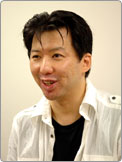本間：そうですね、よくそう言われます。巨大ロボットが登場するゲームを多く作り続けているので、ロボット魂というか、メカ魂だけでゲームを作っている集団なのかと思われているみたいで（笑）。でも、じつはその辺はあまり意識していなくて、まずは“おもしろいゲームを作りたい”ということしか考えていないんです。今回任天堂さんと仕事をさせてもらって非常に良かったと思います。同じクリエイターとして、またユーザーの立場として“おもしろいゲームとは何か？”ということをつねに考えているメーカーだと思っていたからです。実際にお仕事をさせていただいても非常に進めやすかったですし、考え方の根底が似ているなと感じました。 |
N.O.M：今回の開発はどのようにスタートしたんですか？
田島：2004年の8月に最初のプレゼンテーションがあったと記憶しています。企画書を見た段階で、「この開発はやりたいな。このゲームは完成させて遊んでみたい！」と直感しました。 |
N.O.M：まずこのゲームで表現したかったことは何だったんでしょう？
本間：タッチパネルと上下2画面という新しい部分を生かして、いままでに無いおもしろいゲームを作ろうと考えました。ニンテンドーＤＳのタッチパネルの使い方として、初期に登場するタイトルでは、簡単なミニゲームとか従来の操作方法をタッチペンに置き換えて快適にする形で使われるんだろうなと予測していました。でも、そういうちょっとしたアイデアだけで勝負するのではなくて、タッチパネルと上下2画面という特徴をフルに生かしたゲームを作り出すことにチャレンジしたかったんです。一見、今回もロボット魂だけで作っているゲームに思われがちですが、開発には2年かけていまして細部までじっくりと作りこんでいるんです。 |
| 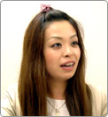田島：上画面でマリオネーションギア（以下MG）が動いて、下画面で操縦する、というのは最初から決まっていたことでしたよね。もちろん最終的に細かい調整はしましたけど、最初のコンセプトのまま完成した珍しいプロジェクトだったと思います。これも、おたがいが描くおもしろさやゲームに対するこだわりに共感できていた結果だと思えますね。 |
N.O.M：MGの独特な操作感はどのようにして生まれたものなのでしょうか？
本間：今回は新しいハードウェアのタイトルということもあって、開発の序盤に必要となる実験・検証をじっくりと進めていく必要があったんです。最初は伊藤と五十嵐の2人でコツコツと作っていました。 |
| 田島：たしか、その実験段階だけで半年ぐらいかけていますよね。最初にできあがってきたのはMGが街の中を歩くところで、新しいバージョンを見せてもらうたびにその完成度が上がっていくんです。うまくいえないんですけど、この歩いているシーンだけで、ゲームの完成形が見えてくるような気がしていました。 |
| 本間：僕らの開発の手法というのは、思い描いているものが本当におもしろいのかどうか、サンプルを作って検証してから進めていくんです。ただ、今回は従来ほど簡単ではなく、ニンテンドーＤＳ対応のタイトルなので上画面の操縦者視点の3D部分と下画面のコクピット部分の両方があるわけです。なにか問題があったとき、または現在のレベルでは目指すおもしろさに達していないとき、どちらを修正していけばいいか大いに迷いましたね。 |
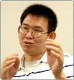伊藤：普通のゲームだとコントローラは必ず決まっていて、そのコントローラを前提にして、その範囲内でどのように操作を調整するかという形だと思うんです。ところがタッチパネル上で自由にコクピットを作り直せるということを考えると、テストするにしても現在自分は何を検証しているのかだんだんわからなくなってくるんですね（笑）。

五十嵐：周囲からは何をしているのか不明な謎のセクションとして思われていたよね。 |
N.O.M：プレイしていて思ったのが単なるロボットが登場するヒーロー物ではなく、生活の色々な場所でMGが普通に活動しているという世界観が新鮮に感じたのですが。
本間：僕らの場合は“まずゲームありき”のスタイルなので、ストーリーに合わせてゲームは作りません。今回表現したいゲームのおもしろさって何だろう？ ということを明確にできてから、それに合ったストーリーを加えていきます。巨大な操り人形が活躍する今回の世界観というのもゲームから派生したものなんです。 |
N.O.M：そのゲームのおもしろさ、という定義は操作感覚やシステムということでしょうか？
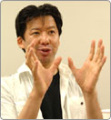本間：そうです。伊藤が作ったサンプル版を遊んでみると、コクピットのレバーに合わせてMGの部位が動くというのが1980年代に全盛だったスーパーロボット達よりも、もっとアナログな……操り人形のような雰囲気で、レバーを動かしたぶんだけMGの腕も動くという感覚が非常に新鮮でした。夢中になれるゲームって先へ進めなくても、操作しているだけでも楽しいじゃないですか。例えばスーパーマリオのように。 |
| 伊藤：今回は“動かしたぶんだけ動く”という感覚を楽しんでもらえればと思っています。まず実験段階で3D画面用のMGのモデルデータと、コクピットというアイデアをもらってどう動かすかと考えました。1つの操作に対応してMGが複雑なアクションをするのではなく、むしろコクピットを通じてMGとの一体感が味わえるような仕様に挑戦してみました。 |
| 本間：アナログ操作という発見は開発の初期段階における壁でもあったし成果でもありましたね。この操作感覚は実際に遊んでもらわないと伝わりにくいとは思うのですが、攻撃ボタンを押したからロボットが攻撃するのではなく、人形を操っているように、自分が動かしたいぶんだけ剣を振れるということから生まれる醍醐味を感じてほしいです。 |
| 五十嵐：伊藤が仕上げてきたものを見て、単純におもしろいと感じましたね。こういうことなら色々なMGを生み出す価値はあるなと。でも、出だしは良かったんですけど、それから大変でした。 |
| 本間：あらゆるタイプの操作方法を実験しました。最初は1本のレバーでどれだけMGを動かすことができるか挑戦してみたり。外観は巨大なクレーンのようなMGだったかな。コクピットはクルマのシフトレバーみたいな感じで、こっちに動かすと前進して違う方向へ切り替えるとパンチで攻撃するみたいな。 |
| 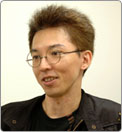五十嵐：実験段階でもかなりの数のMGをデザインしたんですけど、それは全部ボツになってしまいました。いままでも入念な実験を繰り返しながら色々なゲームを作ってきましたけど、今回のようにまとまった量のデータをいったん捨てるというパターンは初めてでしたね。 |
N.O.M：聞いているともったいない気もしますね。それはどうして？
五十嵐：なにしろ初めて挑戦することなので、特徴のハッキリしたMGばかりを作ってテストしていたんです。さきほどのクレーンもそうですけど、カマキリとか。タッチパネル上でコントロールするという概念自体が初めてですから。ニンテンドーＤＳとどのようにして向き合えばいいか最初は迷いました。そういう意図で作ったテスト専用ともいうべきMG達だったわけです。 |
| 田島：たしか斜め方向にタッチペンを動かす操作方法などもありましたよね。そのまま剣で袈裟斬りするようなアクションに連動していたと思いますけど。でも、それが入力しずらくて。ただ、これを続けていったら新しいおもしろさが生まれるな、と確信しました。 |
| 本間：つまり、タッチパネルじゃないと遊べないようなゲームを作りたかったんです。下画面の色々なコクピットを動かすだけで楽しいよ、という。昔のゲームって、そういう部分を強く残していたと思うんですよね。難しいテクニックを決める以前にキャラクターを左右へ動かすだけでも楽しい。僕らはそういうゲームを体験して育っていますから、その部分がいかに楽しいかを知っている。そして、ニンテンドーＤＳのタッチパネルというのは、それを表現するのに適しているんじゃないかなと思っていました。そこを表現することに本気で向き合いたかったんですね。 |
N.O.M：その意味では『超操縦メカMG』というタイトルはピッタリですね。
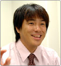成澤：じつはタイトル候補は軽く100個ぐらいはあがっていたんです。『○○戦士××』とか、『□□人形△△』とか、よくある王道ともいうべき漢字四文字のあとにカタカナや英字が入る組み合わせからスタートして、社内のトップも含めた大規模な会議にまで発展しました。そのときに、このゲームを一言で表すフレーズって何だろうと考えたときに多くの人間から出たのが“操縦”だったんですね。 |
| 田島：そこで社長の岩田から「じゃあ、超操縦というのはどうだろうか？」というコメントが飛び出してきて、コレだっ！ と思いましたね。“超操縦”って画数が多くて硬い感じのする字が並んでいるじゃないですか。ロゴにしたときも重量感があって、とってもいい。 |
| 成澤：超操縦とマリオネーションギアの略語であるMGの間にメカを入れたことによって、ユーザーの方がよりゲーム内容をイメージしやすくなったと思っています。 |
N.O.M：重量感あふれるロボットの動きは、やはりメカ魂あってこそのものだと思うのですが。
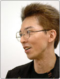五十嵐：巨大ロボットをゆっくり動かして重量感あふれる演出にするノウハウに関しては、以前までにサンドロットで開発してきたゲームの中で、ほぼ完成しているんです。アニメ等でよくあるバーニアを吹かしてすごいスピードで移動するものではないんですね。今回ももちろん同じコンセプトで開発は進めています。ただ携帯型ゲーム機で画面が小さくなっていることと、プレイヤーの視点がMGの真後ろからのものになっていることから、あまりに遅いとプレイヤーが耐えられないだろうと判断しました。そのため今までのゲームに比べるとロボットの動きは若干速くしてあります。それでも根幹のところはサンドロットにおけるゲーム作りのスタート地点からブレていないと思っています。 |
| 本間：歩くスピードは何段階も作って試しましたね。遅すぎると耐えられないし、早すぎても楽しくない。この間のどこに正解があるのか……この、ゲームのこだわりというべき部分でも任天堂さんと活発に意見を交換させてもらいました。やっぱり、MGの移動スピードを速くするほど軽い印象を与えます。でも、遅くするとプレイヤー側のストレスもたまっていく。遊ぶ側が重量感と捉えてくれるのか、ストレスに感じるのか、ここの見極めは本当に難しかったです。 |
| 五十嵐：スピードに関して言えば基本のスピードに色々な倍率をかけて実験したおかげで、それぞれのスピードに違った楽しさもあるなという部分も見えてきました。これは各工房のMGに個性を与えるときにとても役立ちましたね。 |
| 本間：あと街の作り方などにも巨大メカが登場するゲームを作ってきた今までのノウハウが活かされてます。 |
| 五十嵐：ちょうどジオラマを作っている感覚なんです。最初は街側から作るのですが、まずは全体の基本スケールを確定させてビルの高さなどを決めていく。画面内に見えるオブジェクト同士の対比には破綻がないように作っています。そして、そのなかにMGを置いた結果どう見えるか。MGが小さすぎると街に埋没して遠方が見えなくなる。大きすぎると反対に街があってもなくても同じになってしまう。今回は真後ろからの視点でMGを動かすので、あまりMGが小さいとビルに囲まれて閉塞感が出てしまいました。その点には気をつけて微調整していきました。 |
| 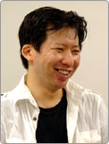本間：これは余談なんですが、最初はMGを乗り換えるときはいったんガロイ工房（主人公たちの拠点となる工房）に戻る仕様になっていたんです。それではマップが広がるほど面倒になるということで運搬車両としてのオメガ・カーゴを登場させました。でも、あれはどう見てもMGが100体入る大きさではないですよね（笑）。ただ、オメガ・カーゴをそのスケールにしてしまうとビルよりも大きくなってしまう。最初は要塞のような大きさで、こうなったらビルにぶつかりながら走るようにしようかとも思いましたけど、これだけは例外として小さくさせてもらいました。何段階か小さくしていって、ようやくあのバランスになっているんです。 |
| 田島：現在でも十分大きいんですけどね。複数の車線をまたいで走行してますから。 |
N.O.M：これらの独特な演出を実現すべくプログラムする側としての苦労はどんな点が？
 伊藤：ええ……まあ、今回は最初から無抵抗主義で（笑）。本間たちから言われたとおりにプログラムしていきました。最初からかなりの数のMGが出るということは聞いていたので、これは企画側の意図を実現させる形でどんどん詰め込んでいくしかないかなと。 伊藤：ええ……まあ、今回は最初から無抵抗主義で（笑）。本間たちから言われたとおりにプログラムしていきました。最初からかなりの数のMGが出るということは聞いていたので、これは企画側の意図を実現させる形でどんどん詰め込んでいくしかないかなと。
田島：画面が上下に揺れる演出にも注目して欲しいですね。これによって臨場感が一層高まっています。操縦中に上下の画面を揺らすかどうかは設定で切り替えられます。初心者でもプレイしやすいようにゲームの初期設定ではオフになっているんですが、ぜひオンにして楽しんで欲しいですね。 |
| 伊藤：そういう演出も含めて、いままでのノウハウをニンテンドーＤＳで実現できるかぎり盛り込めたとは思っています。 |
| 本間：巨大ロボットで敵と戦うから楽しいんじゃなくて、その巨大ロボットを操作すること自体が楽しいはずなんです。そのため作り手側としては長い制作期間があったら、最初の数ヶ月にロボットが一歩を踏み出す、その歩き出した瞬間のおもしろさを突き詰める必要があるんですよ。どのような理屈でプレイヤーが爽快感を得るかということを厳しく検証していくべきなんです。 |
| 五十嵐：ズシーンと一歩を踏み出したときの重量感や、周囲のビルにロボットが少し当たった瞬間にただのポリゴンにぶつかっただけと思うだけか、人が住むビルを壊しちゃったと感じてくれるか、それは色々な要素が絡み合って成り立つ演出だと思っています。 |
N.O.M：ゲーム中には100体以上のMGが登場しますが、これは何人ぐらいでデザインしたものなのでしょうか。
五十嵐：実は98パーセントぐらい自分1人でデザインしています。ただ私の描くロボットというのが、イマドキっぽい線じゃないんですよね。というか、そもそも描けない（笑）。これは以前から変わらないのですが、逆にその部分で他には無いオリジナリティは出ているかと思っています。このゲームの“遊び”はこうだからこのような形になるべきだ、そんなことを念頭に置いていつもデザインを進めています。
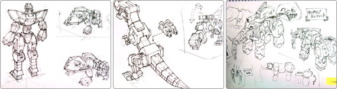 |
| 伊藤：実際、プログラムとしてはニンテンドーＤＳで表現できる3Dの限界に挑戦しています。そのためMGの種類は増やさないといけないけど制限もある。例えばMGを構成するポリゴンや動かす関節の数などはかなり少ない仕様にしているんです。 |
| 五十嵐：その限界をふまえつつ、それぞれが似ないようなMGをデザインしていく必要がありました。単純に数がたくさんあることの喜びってあると思うんですよ。新しいMGを手に入れたら今回はどんな外観なのかな？ どんなコクピットで操縦するんだろう？ そんな上下両方の画面で2倍楽しめる提案をしたかったんです。 |
| 成澤：コクピットは最初は20種類ぐらいを目標にしていたのですが、最終的には50種類近くまで増えています。それぞれのコクピットはこだわりをもって作られていますよ。ぜひ、すべてを操縦してみてほしいですね。 |
N.O.M：工房ごとに色々なタイプの個性的なMGがいて集めるのが楽しいです。
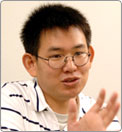伊藤：いままでは基本的には2足歩行の1種類だけだったのですが、今回はMGを動かすためのプログラムだけでも10種類以上用意しているんです。4足や6足もいれば、クルマもいるし、キャタピラもいる。ぜひ色々なMGを試してみてほしいですね。
本間：自分の好きな工房、好きなMGというのがかならず見つかると思いますよ。個人的には変形するロボットが大好きなんで、MGのデザインに関する打ち合わせでは、つねに「変形！ 変形！」と言っていました。極端にいえば全部変形させてしまえば良かったと思っているぐらいで。 |
| 五十嵐：じつは変形機能はデータの容量の関係であまり増やしたくなかった要素なのですが、変形させたい理由が「コクピットが2種類になっておもしろさも倍増するじゃないかっ！」と言われた瞬間、納得してしまったんですね。今回のゲームの根幹に関わる部分なら仕方ないなと。変形可能なデザインを考えるのは大変なんですけど、制作の途中から、なんか、どんな物でも人型に変形させられるぞという妙な自信が芽生えてしまって（笑）。 |
| 本間：気付くとコイツはダチョウに変形する、こっちはヘリコプターに変形するとか、ある時期からあらゆるものが変形していたのには驚きました。ただ変形を前提にしてしまうと人型時のプロポーションが犠牲になる場合もあるので、じつは惜しまれつつボツになったモデルや変形案も多いんです。 |
N.O.M：シンプルなゲームシステムも遊びやすいですよね。
田島：ミッションクリア型にするというのは初期から決まっていたんですけど、そのボリュームがどのくらいになるかでゲームとしての印象も変わってきます。でも、最終的にはすごい遊びがいのある内容に仕上がったと思っています。ミッションの内容もバトルだけじゃなくて色々なパターンを盛り込めて、MGの数も100を越えていますからね。 |
成澤：開発の終盤でお願いしたのはユーザーがストレスなく遊べるようにしてほしいということでしょうか。例えばマップの移動をシンプルにしたり、次の目的地がどこかわかりやすくしたり。シナリオなどの進行画面をスムーズに展開できるようにしていただきました。
本間：上下2画面があるということがこれほど大変とは思いませんでした。ニンテンドーＤＳならではの表現の方法、そしてそれをタッチパネルで操作する際に、どうすればユーザーの方々にわかりやすくストレス無く遊んでもらえるか。この点には圧倒的なノウハウを持っている任天堂さんから的確なレクチャーをいただけましたね。 |
| 田島：サンドロットさんの作り方に共感していましたのでとくに心配することはなかったのですが、強すぎるこだわりは時に初心者ユーザーを置き去りにしてしまうことがあるので、ゲーム慣れしていないユーザーが拒絶してしまわないように、かつサンドロットさんファンのユーザーも満足して楽しんでもらえるよう、とくに導入部分や難易度の調整には気を遣いました。 |
| 成澤：バランス調整の段階でまず気をつけたのは、元々あったおもしろさを壊さないように難易度などの調整を行ったことですね。 |
N.O.M：各ミッションで最初から4段階の難度が選べるのも硬派な仕様ですよね。
本間：幅広いユーザーが遊ぶことを考えてというのと、高いハードルに挑戦したときにはそれに見合う報酬を受け取って欲しかったんです。 |
| 田島：でも、初期段階のスーパーハードとか相当な難しさだったんですよ。これをどのようにバランス調整しようかなと考えているときに、サンドロットさんから「スーパーハードを現状よりも少し難しくしませんか？」という連絡が来たりして。そんなに難しくしたらミッション達成率100％とかムリ！（笑） |
| 本間：いやいや。現在のスーパーハードが簡単に感じるプレイヤーも少ないとはいえ、いらっしゃると思うんですよ。そういう方にも楽しんで欲しかったので。その辺のプレイヤーごとのスキルの差を埋めるための4段階ともいえるわけです。もっともスーパーハードといっても単に敵のパラメータがあがっているだけというものではなく、動きのアルゴリズムも変更しているのでMGのチョイスや戦略も変わってくると思いますよ。MGの能力アップだけではなくプレイヤーとしての経験値を上げてチャレンジしてみてください。 |
N.O.M：よかったら皆さんの好きなMGなどを聞かせてください。
本間：ゲーム終盤に登場する特撮ヒーローメカ風のＭＧですね。本当にお気に入りで、あのMGのためにテーマ曲を1曲作ったぐらいです。ぜひ手に入れて聞いてみてください。 |
| 伊藤：オーソドックスですけど人形武者ガウスですか。けっこう単純な操作しかできないように思えて、じつは色々な連続技などを試すことができるんですよね。 |
| 本間：剣に関しては通称“人形剣技”と呼ぶべき高等テクニックがたくさんあるんですよ。 |
| 五十嵐：現在のガウスって、じつは2代目なんです。開発当初からいるMGなのでデザインに愛着があると同時に改良も大きく加えているんです。自分が好きなのはゴッドフリードG4や人形騎士スレイフなどの少しレトロなMGですね。 |
| 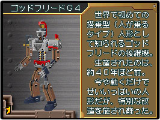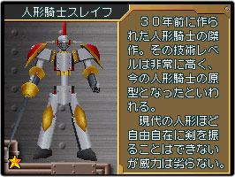 |
| 成澤：私はダルタニアでしょうか。剣と鉄砲を扱えて使い勝手がとてもいいのでオススメです。 |
田島：私は人形甲虫ヴィーガルです。他のMGよりも背が低いので敵の攻撃をよけやすいのと、モードチェンジで火力が一気にアップするところがメチャメチャ強いと思っているんですけど。
本間：ダルタニアは極めると最強クラスのMGのうちの1体といえますね。ヴィーガルもバランス調整の最中にあまりにも強いので開発チーム内で“ヴィーガル問題”として話し合われた経緯があります。
田島：昆虫は苦手なんですけど、なぜかヴィーガルは好きなんです（笑）。 |
N.O.M：最後に『超操縦メカMG』を遊ぶユーザーの方へメッセージをお願いします。
五十嵐：MGだけではなく敵のオートマンたちもけっこう愛らしいデザインなので、好きになってやってください。 |
| 伊藤：1度エンディングまでいったら、2周目は違うMGでミッションに再挑戦してほしいです。全然違った楽しさが味わえると思いますよ。 |
| 本間：難しいと言われていますが、ミッション達成率100％は絶対にイケます！それと初心者向けのMGが数体用意されているのですが、上級者の方はそれをあえて使わずに楽しんだ方がいいと思います。 |
| 成澤：タイトルにあるとおり、色々なMGをがむしゃらに操縦しまくってほしいですね。敵と戦うだけじゃなくビルを投げ飛ばすとか、思う存分自分の好きなように遊んでいただければ。 |
| 田島：ゲーム自体が楽しいのは間違いないです。その他にもサンドロットさんのメカへの愛情がヒシヒシと感じられる商品です。オススメなのが初めて工房を訪ねたときにMGを紹介するときのイベントです。グラフィック、BGM、どれをとってもカッコイイので要チェックです！ |
| N.O.M：新しいMGを操縦したくなってきました。今日はありがとうございました！ |
|